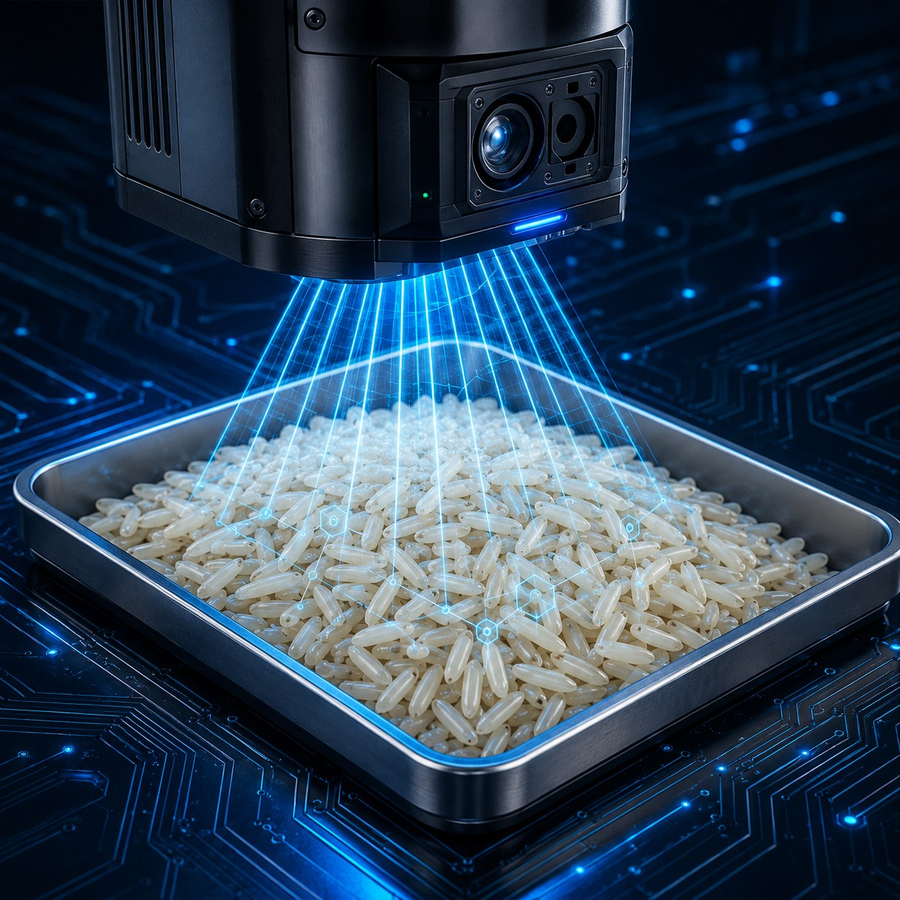

Fast Edge Inference
Processes AI workloads close to the inspection system for rapid analytical results.
TMA brings machine vision, optimised AI inference and industrial edge computing directly to rice-quality analysis — processing camera data next to the machine rather than depending on continuous cloud processing.

Processes AI workloads close to the inspection system for rapid analytical results.
Uses integrated Intel® Arc™ GPU acceleration for real-time AI inference.
Uses OpenVINO™ to improve AI-model execution efficiency and reduce latency.
Supports rapid detection, measurement and classification for industrial quality inspection.

Authorised operators review detections in context, validate or correct results, and maintain accountability throughout the quality-analysis workflow.
| Technology platform | Qualitas Eagle Eye Video Analytics Platform |
| Processor family | Intel® Core™ Ultra Processors |
| AI acceleration | Integrated Intel® Arc™ GPU |
| AI optimisation | OpenVINO™ Toolkit |
| Video AI framework | Intel® Deep Learning Streamer |
| Inference architecture | Edge-based, real-time AI processing |
| Model execution | Multiple AI models within a unified pipeline |
| Supported inputs | Industrial cameras, IP cameras, existing video streams, live conveyor feeds |
| Operator validation | Human-in-the-Loop monitoring, review and correction |
| Rice application | Grain counting, defect detection, physical-property measurement |
| Technology | AI-powered Machine Vision |
| Supported grains | Paddy, Brown Rice, Parboiled Rice, White Rice |
| Parameters | 100+ — Physical, Chemical, Nutritional, Visual, Predictive & Economic |
| Throughput | Up to 300 samples/hour* |
| Sample type | Whole Grain |
| Sample quantity | 50–500 g per sample |
| Display | 15.6" Touchscreen |
| Connectivity | Wi-Fi, Ethernet, USB |
| Data storage | Local + Cloud |
| Power supply | AC 220V, 50Hz · <150W |
| Dimensions (W × D × H) | 520 × 420 × 720 mm · Approx. 45 kg |
| Operating environment | 10°C – 40°C, <85% RH (non-condensing) |
*Throughput may vary based on parameter set and sample type. Specifications are subject to change without notice and are confirmed only in the applicable quotation and contract.
Bring your own paddy and your own rice to a live TMA demonstration.